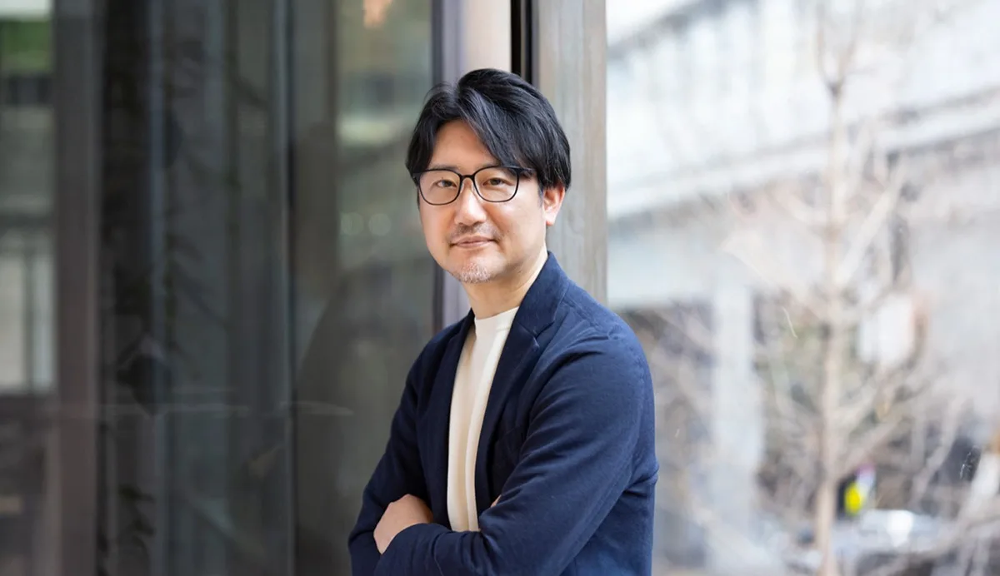

CASE STUDY
導入事例
ノビシロと取り組んだお客様の、ご依頼の背景と、取り組みのあとに起きた変化をご紹介します。
LATEST
新着の事例

NEW株式会社エルシーエス 代表取締役 岡 裕輔 様
社長が一人で背負う組織から、幹部が自ら判断する組織へ。3ヶ月の幹部育成で、社長に「自分の時間」が戻った
横浜と東京・六本木を拠点に、ソフトウェア開発とDX支援を手がける株式会社エルシーエス様。社長が一人で組織を背負っていた状態から、幹部2名の方とともに3ヶ月の幹部育成に取り組みました。
社長に判断を仰ぐ回数（1ヶ月あたり）事後アンケートより
12〜13回→5〜9回
10回程度→0〜4回
CASES
事例一覧
社長が一人で背負う組織から、幹部が自ら判断する組織へ。3ヶ月の幹部育成で、社長に「自分の時間」が戻った
株式会社エルシーエス 代表取締役 岡 裕輔 様
事例を読む
「御用聞き」の営業から抜け出し、案件化率1.5倍。ヒアリングシートとトークスクリプトの型化
広告・販促の会社 代表者様
事例を読む
掲載している事例について
ご支援したお客様へのインタビューと、ご支援の記録をもとにまとめています。会社名とお名前は、掲載のご了承をいただいた範囲で載せています。会社名を伏せている事例もあります。
自社に近い悩みがあれば、
まずは60分の無料診断で。
貴社の組織のノビシロを一緒に整理します。オンライン対応・契約義務なし。